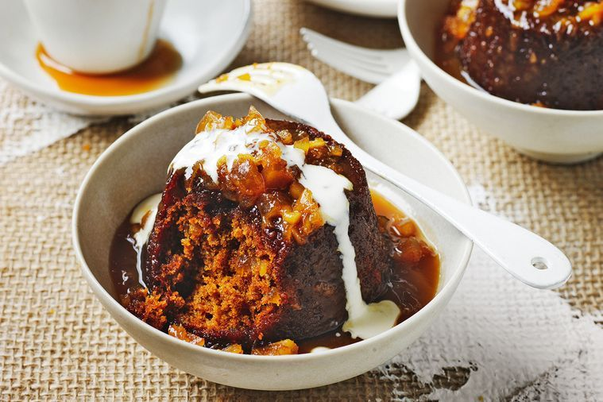

Sticky ginger pudding

Description
You can never beat a pudding, unless it's spiced with ginger. And, don't forget the cream.
Ingredients
- 1 3/4 cups (260g) self-raising flour
- 1 1/2 tsp ground ginger
- 1/4 tsp bicarbonate of soda
- 100g dark muscovado sugar
- 2 tbs treacle
- 120g unsalted butter, chopped, melted
- 1/2 cup (125ml) buttermilk
- 3 eggs
- 150g uncrystallised ginger, finely chopped
- Thickened cream or ice cream, to serve
Ginger sauce
- 100g unsalted butter, chopped
- 1/3 cup (75g) dark muscovado sugar
- 1/3 cup (80ml) ginger beer
- 200ml thickened cream
- 120g uncrystallised ginger, chopped
Steps
- Preheat oven to 180°C. Lightly grease a 6-hole Texas muffin pan.
- Sift the flour, ginger and bicarb into a bowl. Add the sugar, treacle, butter, buttermilk and eggs and whisk until combined. Add the ginger and fold through until well combined. Divide mixture into prepared pan and bake for 20-25 minutes until golden and slightly soft to the touch.
- Meanwhile, for the ginger sauce, place all ingredients in a small saucepan over medium heat and stir until the sugar dissolves. Bring to the boil and cook, stirring, for 5 minutes or until slightly thickened. Remove from the heat and allow to cool slightly.
- Turn the puddings out into bowls and pour over the warm ginger sauce. Serve warm with cream or ice cream.
Return to Home Page